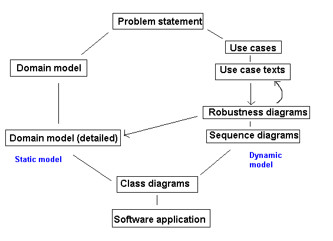
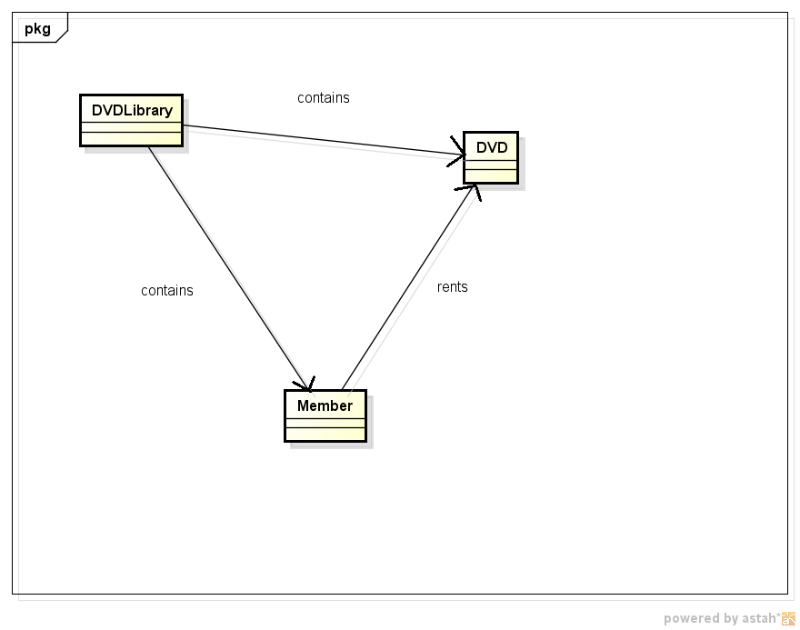
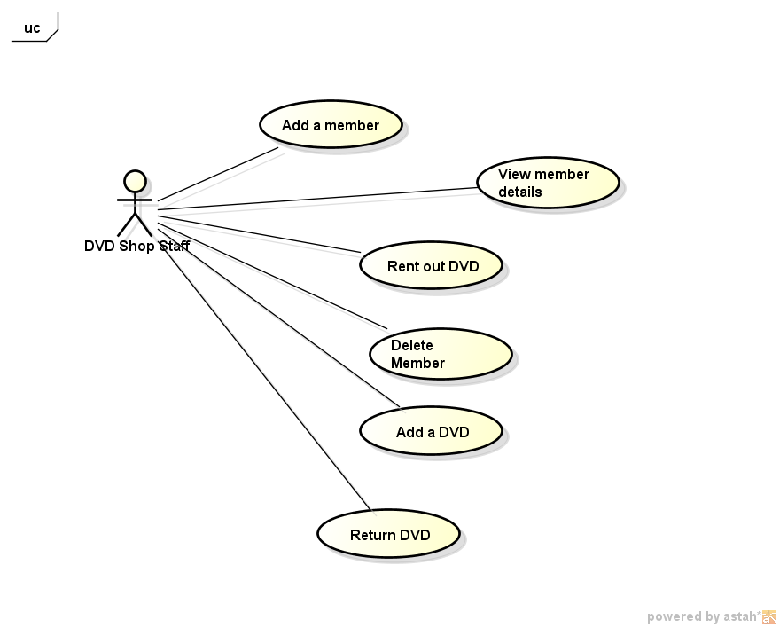
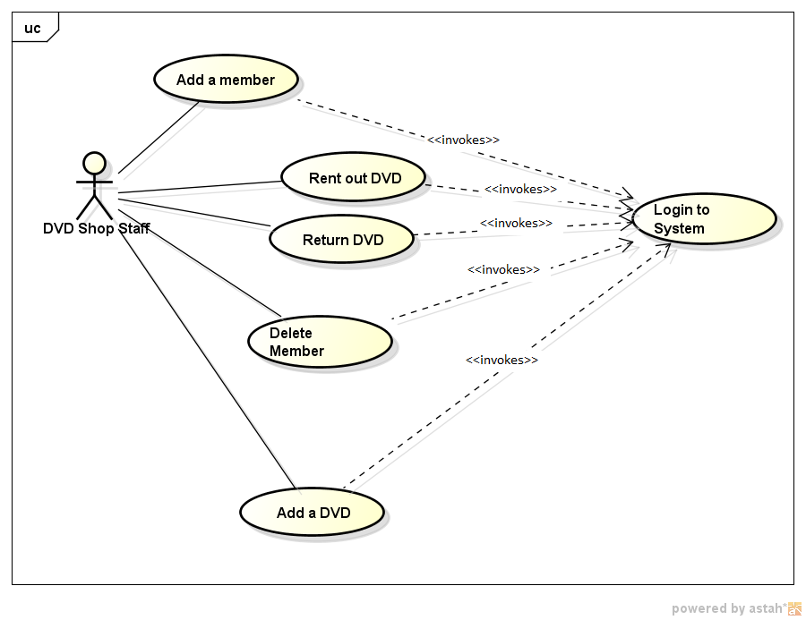
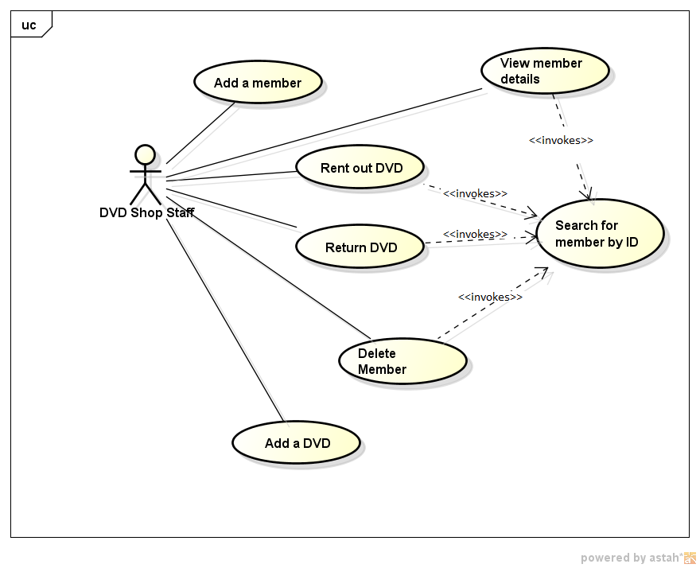
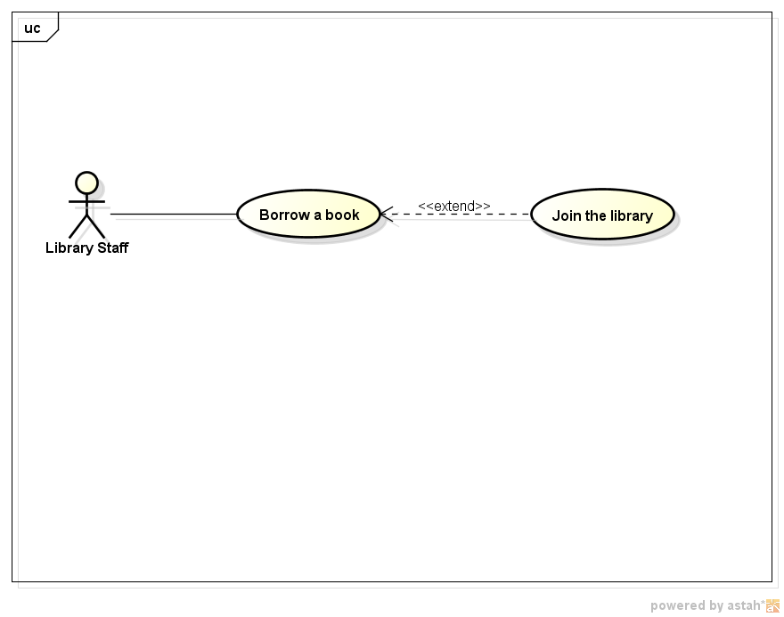
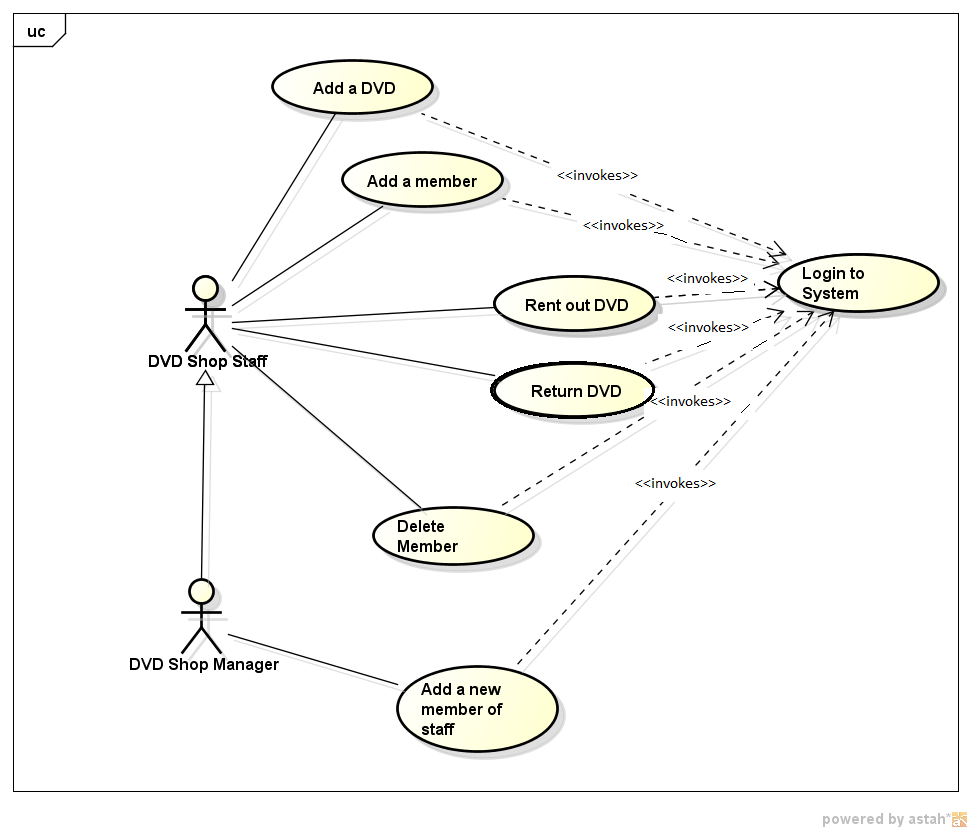

Intro to ICONIX, Use Cases
Page 1
UML and ICONIX
- What is Analysis and Design?
- What is UML?
- What is ICONIX?
- Domain Models and Use Cases
Page 2
What is Analysis and Design?
- We first analyse the problem by breaking it down to get an
idea of such things as:
- How a user will interact with the system
- How the system will respond
- How the system will react to errors
- From the analysis, we then design the classes in our system by working out their attributes and methods and how they interact
Page 3
UML: Unified Modelling Language
- A set of diagrammatic tools to enable developers to analyse a problem and design an object-oriented solution to the problem before coding it
- These diagrammatic tools include (but are not restricted to):
- Class diagrams
- Sequence diagrams
- UML is not an analysis and design process; rather it is a set of tools which can aid us in that process
- It can be used in various different analysis and design techniques
Page 4
The ICONIX process
- A formal method to move from an initial description of a problem to code
- Uses certain (but not all) features of UML
- 
- Ref: Rosenberg/Scott
Page 5
The ICONIX process - the static and dynamic model
- We move from the problem statement to code by looking at the analysis and
design from two angles:
- The static model looks at the classes in the system and their attributes
- The dynamic model considers things from the point of view of user interaction with the application
- We develop both in parallel; information from the dynamic model can be used to develop the static model
Page 6
The problem statement
- The ICONIX process starts with a problem statement
- This is a written description of what is required of the application
- Example problem statement:
There is a requirement for a software application to allow a DVD shop to manage its stock and handle rentals. Each member is identified by member ID. When members join, the DVD shop needs a record of their name, address and date of birth. Members can rent out up to 5 DVDs and return them, and may wish to later cancel their membership or inform the DVD shop of changes to their details.
Page 7
What do we do with the problem statement?
- We need to derive two artefacts from it (see diagram above):
- The domain model - the initial static model
- The use case diagram - the initial dynamic model
Page 8
1. The domain model
- A diagram showing possible classes in the system, and their interaction
- We derive it by:
- analysing the problem statement, and looking for nouns and their interactions - these are our first guess at classes in the system
- Having derived a list of possible objects, we then connect them together to illustrate the relationship between them
- e.g. for the DVD library application, specified in the problem statement above:
- This shows three possible classes in the system, and the relationship between them (DVDLibrary contains DVDs, Member rents DVDs etc)
Page 9
Multiplicity
- Having drawn an initial domain model, we annotate it further with the multiplicity
- This shows how many objects of each class are interacting with each other
- e.g. in the DVD library:
- This diagram is indicating that:
- A DVDLibrary may contain one or more (1...n) DVDs
- A DVDLibrary may contain one or more (1...n) Members
- A Member may rent zero to five (0...5) DVDs
Page 10
2. The use case diagram
- The other initial analysis and design artefact is the use case diagram
- This takes a different approach to the problem compared to the
domain model:
- The domain model looks at the problem from the point of view of the classes in the system (data driven)
- The use case diagram considers things from the perspective of the users (Who are the users? How are they able to interact with the system?)
Page 11
A use case diagram
A use case diagram shows:
- The actor(s)
- These will be the people using the system, e.g. DVD shop staff
- Represented by matchstick figures
- The use cases themselves
- These are the tasks which the actors need to perform with the system
- e.g. for the DVD rental application, these could be:
- Add member
- View member details
- etc. (see below)

Page 12
Including other use cases
- A use case can also include another
- If a use case includes another, it means that the included use case must be executed as part of the original use case
- An example would be a login use case which is included by many others, eg:
 - Here, the add member, rent DVD, return DVD, delete member and add DVD use cases all include the login use case
- According to Booch, Rumbaugh and Jacobson ("The Unified Modeling Language, User Guide" 1999, p227), the included use case "never stands alone" - it is intended to be executed as part of another use case
- In our login example, this applies: a user never logs in just for the sake of doing it, but in order to do something else
Page 13
Including other use cases - example 2
- Another example of the use of include is shown below
- In this example, rent DVD, return DVD, view member details and delete member all include the search for member by ID use case
- This means that all those use cases must include the search
process as well as their own specific behaviour

Page 14
Extending other use cases
- Extending a use case means to specify optional additional behaviour which applies in some cases only
- extend differs from include: extend indicates an optional extension
- Imagine there is an application to manage library membership
- In the example below, borrow a book is an extension of join the library
- Why is this?
- When a person borrows a book, they have to be a member of the library first
- So "join the library" is an optional extension to "borrow a book"
- Example:

Page 15
Generalised and specialised actors
- A use-case diagram can have more than one actor, as different use cases might be performed by different actors
- Through use of the generalisation symbol in UML (an arrow with an unfilled arrow-head), we can distinguish between generalised actors and more specialised actors
- An example would be a DVD shop manager, which is a more specialised (more specific) type of DVD shop staff
- The example below shows this:
- The DVD shop manager is a more specialised version of a DVD shop staff, so conversely, the DVD shop staff is a more generalised version of a manager. We indicate this generalisation relationship with an unfilled arrow
- Because the DVD shop manager is a type of DVD shop staff, the manager can do all the use cases that an ordinary member of staff can do, plus add a new member of staff

Page 16
Use-case texts
- The next step is to break down each use case into a series of steps describing how a user will interact with the system in order to complete the use case
- A use-case text has two columns:
- Actor action, describing how the actor will interact with the system
- System response, describing how the system will respond.
Page 17
Example use-case text: Add member
| Step | Actor action | System response |
|---|---|---|
| 1 | The use case begins when the DVD shop staff selects to add a new member. | - |
| 2 | - | System prompts the user for the member details (name, address, date of birth) |
| 3 | The user enters the details specified in step 2. | - |
| 4 | - | System checks validity of details, e.g. date of birth is sensible |
| 5 | - | System checks that member does not exist already (same name, same address) |
| 6 | - | System allocates membership ID for new member |
| 7 | - | System enrols member on system |
| 8 | - | System displays membership ID for DVD shop staff to see. |
Page 18
Alternative courses of action
- Our use-case text must also include alternative courses of action
- These describe how the system should react to errors
- This can help us design robust systems
- They go below the main use-case text
- e.g. in the previous use-case text:
At step 4: Date of birth is not sensible. Staff informed that date of birth is not sensible. Staff re-prompted for details (go back to step 3) At step 5: Member already exists. Staff informed that member already exists. Return to main menu (go back to step 1)
Page 19
Example use-case text: Rent DVD
Not perfect by the way - maybe you can come up with something better!
| Step | Actor action | System response |
|---|---|---|
| 1 | The use case begins when the DVD shop staff selects to rent a DVD out to a member | - |
| 2 | - | System prompts the user for the membership ID |
| 3 | The DVD shop staff enters the membership ID. | - |
| 4 | - | System checks that the membership ID is valid |
| 5 | - | System displays details of that member |
| 6 | The DVD shop staff enters the name of the DVD that the member wishes to rent. | - |
| 7 | - | System checks that the DVD name is valid |
| 8 | - | System checks that the DVD is in stock |
| 9 | - | System checks that the member has not exceeded the limit on the number of DVDs they may rent |
| 10 | - | System rents DVD out to member. |